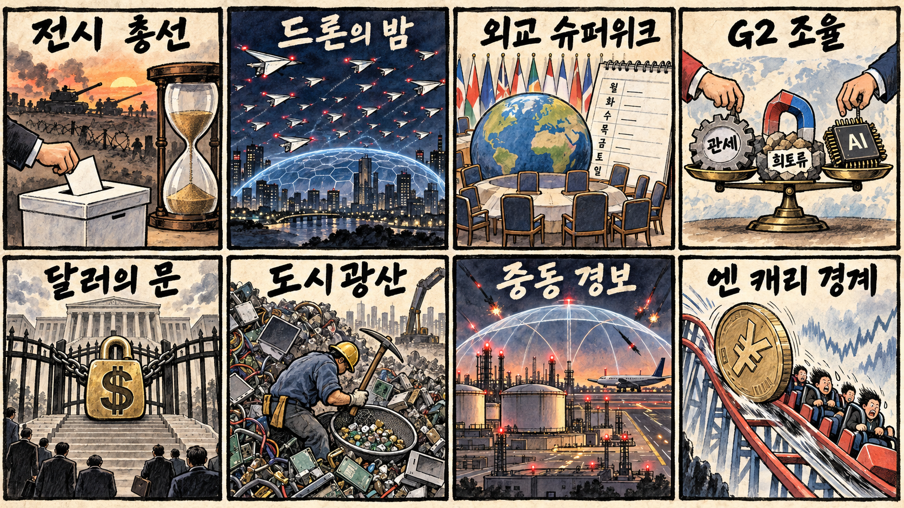
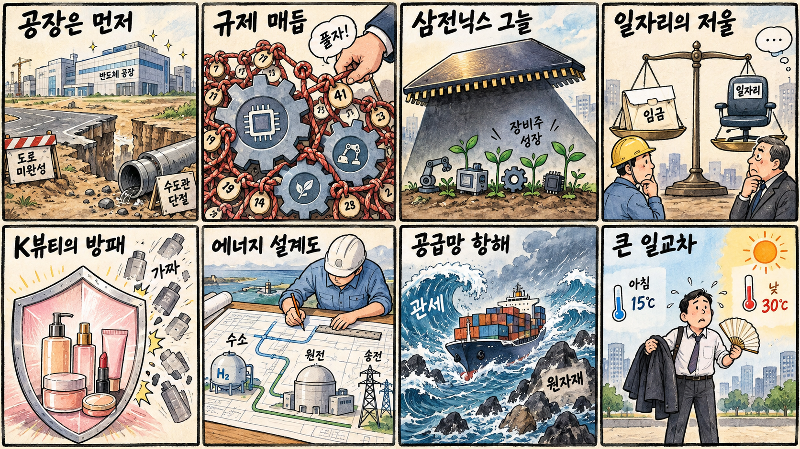

01
마이크로스트래티지 · 136.58→153.92달러 · +12.70%
내용요약 시가 대비 12.70% 급등하며 조사 종목 중 가장 강했습니다. 암호자산 연계주의 높은 베타가 두드러진 거래일입니다.
예상여파 기초자산 변동에 민감해 상승폭만 보고 추격하면 손실 위험이 큽니다.
MORNING_BRIEFING_20260921
작성 시각: 2026-09-21 06:37 KST · 직전 미국 정규장과 2026-09-21 KST 당일 공개 기사 기준
직전 미국 정규장인 9월 18일 뉴욕증시는 네 마녀의 날 변동성 속 다우 -0.18%, S&P 500 +0.17%, 나스닥 +0.40%로 혼조 마감했습니다. 필라델피아 반도체지수는 당일 보도 기준 2.78% 올라 메모리·장비주의 상대강도가 확인됐지만 대형 플랫폼과 보안주는 약했습니다. 월요일 한국 증시는 반도체 온기와 원·달러 1,380원대 부담이 맞설 가능성이 큽니다.
| 지수 | 종가 | 등락률 | 한국 증시 시사점 |
|---|---|---|---|
| 다우존스 | 51,682.64 | -0.18% | 지수 혼조 속 반도체 상대강도 확인 |
| S&P 500 | 7,650.50 | +0.17% | 지수 혼조 속 반도체 상대강도 확인 |
| 나스닥 종합 | 26,522.55 | +0.40% | 지수 혼조 속 반도체 상대강도 확인 |
지수는 소폭 올랐지만 종목별 차별화가 크게 나타났습니다.
메모리와 장비주가 미국 기술주 안에서 상대강도를 보였습니다.
금요일 6,894.23으로 급등해 오늘은 과열 소화와 연속성을 함께 봅니다.
장전 갭과 수급을 확인하기 전에는 검증 문턱을 충족한 후보가 없습니다.
9월 20일 보고서는 일요일 휴장으로 공식 추천을 내지 않았습니다. 게시 당시 판단을 유지하며 사후 종목을 추가하지 않습니다.
| 시장 | 종가 | 등락률 | 기준 |
|---|---|---|---|
| KOSPI | 6,894.23 | +2.66% | 9월 18일 · 시가 대비 +0.12% |
| KOSDAQ | 827.12 | +0.60% | 9월 18일 · 시가 대비 -0.67% |
| 다우존스 | 51,682.64 | -0.18% | 미국 9월 18일 정규장 |
| S&P 500 | 7,650.50 | +0.17% | 미국 9월 18일 정규장 |
| 나스닥 종합 | 26,522.55 | +0.40% | 미국 9월 18일 정규장 |
어플라이드 머티어리얼즈가 시가 대비 5.43% 상승했습니다.
마이크론이 시가 대비 3.16%, AMD가 2.27% 올랐습니다.
마이크로스트래티지와 코인베이스가 각각 12.70%, 9.03% 상승했습니다.
크라우드스트라이크 -3.78%, 메타 -3.32%로 약했습니다.
내용요약 시가 대비 12.70% 급등하며 조사 종목 중 가장 강했습니다. 암호자산 연계주의 높은 베타가 두드러진 거래일입니다.
예상여파 기초자산 변동에 민감해 상승폭만 보고 추격하면 손실 위험이 큽니다.
내용요약 시가 대비 9.03% 상승해 암호자산 거래 플랫폼주가 강세를 보였습니다.
예상여파 거래량과 규제 뉴스에 따라 변동성이 확대될 수 있습니다.
내용요약 시가 대비 5.43% 올라 필라델피아 반도체지수 강세와 방향을 같이했습니다.
예상여파 장비주의 반등이 국내 소부장으로 확산되는지는 월요일 수급 확인이 필요합니다.
내용요약 시가 대비 3.78% 하락해 지수 상승에도 사이버보안주는 약했습니다.
예상여파 성장주 내 자금 순환이 빨라 단일 거래일 약세를 구조적 추세로 단정하기 어렵습니다.
내용요약 시가 대비 3.32% 내려 대형 플랫폼 가운데 뚜렷한 약세를 기록했습니다.
예상여파 AI 투자비 부담과 플랫폼주 차익실현 민감도를 함께 점검할 필요가 있습니다.
직전 거래일 KOSPI는 6,894.23로 전일 종가 대비 +2.66% 급등했고, 시가 대비로는 +0.12%였습니다. 오늘은 미국 반도체지수 강세가 삼성전자·SK하이닉스와 장비주에 우호적일 수 있지만, KOSPI 급등 직후 과열과 미중 협상·환율 변수는 상단을 제약할 수 있습니다. 갭 상승 시 추격보다 개장 후 외국인 현물·선물 수급과 반도체 대형주의 9월 18일 고점 지지 여부를 우선 확인합니다.
오늘은 추천 없음 — 현금 관망
보고서 작성 시각은 장 개시 전입니다. 전일까지의 외국인·기관 수급, 최신 컨센서스 변화, 30건 이상 유사 조건 보정 확률, 예상 손익비 1.5 이상을 동시에 검증한 종목이 없어 점수와 상승확률을 임의로 만들지 않습니다.
관심 연결종목 고용량 메모리·반도체 인프라·전력망은 개장 후 관찰 대상일 뿐 매수 추천이 아닙니다. 직전 급등 종목과 과도한 갭 상승 종목은 추격매수하지 않습니다.
관세·희토류·AI 조율의 구체적 진전 여부를 확인합니다.
장 초반 현물·선물 동반 매수 여부와 환율 방향을 봅니다.
미국 반도체지수 +2.78%가 국내 메모리·장비로 확산되는지 확인합니다.
금요일 급등 뒤 과열 소화와 전고점 지지 여부가 핵심입니다.
핵심 요약: AI 인프라 투자가 보험자금·국산 NPU·차세대 서버칩으로 넓어지는 동시에 전력망과 금융의 안전한 통제 문제가 부상했습니다. 멀티모달 AI의 현장 확산은 센서와 엣지컴퓨팅 수요를 키울 전망입니다.
내용요약 일본생명보험이 미국 AI 인프라 금융에 향후 2조 엔을 투입할 계획이라는 당일 보도입니다.
예상여파 데이터센터 자금 조달의 병목이 완화될 수 있지만 장기 전력계약과 금리, 준공 지연 위험이 투자 수익성을 가를 수 있습니다.
내용요약 AMD가 차세대 서버 칩의 성능 우위를 강조하면서 삼성전자·SK하이닉스의 서버 D램 수요가 주목받는다는 당일 보도입니다.
예상여파 AI칩 경쟁이 확대되면 GPU뿐 아니라 CPU·고용량 메모리의 공급망 다변화가 빨라질 수 있습니다.
내용요약 국내 AI 반도체 기업 리벨리온과 퓨리오사AI에 대규모 벤처자금이 몰렸다는 당일 보도입니다.
예상여파 국산 NPU의 상용 고객과 소프트웨어 생태계 확보가 후속 투자와 해외 진출의 핵심 검증대가 될 전망입니다.
내용요약 미국에서 AI 시스템을 강제로 끄는 조치가 전력망과 금융 인프라까지 흔들 수 있다는 딜레마를 다룬 보도입니다.
예상여파 고위험 AI 통제는 단순 종료 장치보다 단계적 격리와 필수 인프라 연속성을 함께 설계해야 할 수 있습니다.
내용요약 시각·음성·촉각 정보를 함께 처리하는 멀티모달 AI가 제조와 로봇 현장으로 확산한다는 당일 보도입니다.
예상여파 센서·엣지컴퓨팅·안전 검증 수요가 늘고 피지컬 AI의 실제 생산성 평가가 중요해질 수 있습니다.
핵심 요약: 러시아 전시 총선과 유엔총회가 안보 의제를 끌어올리고, 미중 경제수장의 관세·희토류·AI 조율이 무역의 방향을 가를 전망입니다. 달러 결제망 제재와 일본의 도시광산 전략은 금융·자원 안보 경쟁의 확장을 보여줍니다.
내용요약 러시아가 우크라이나 전쟁 이후 첫 총선을 치르는 가운데 중간 투표율과 집권당 우세 전망이 전해졌습니다.
예상여파 전시 정치체제의 지속성과 점령지 투표의 정당성 논란이 향후 대러 제재와 평화협상 환경에 영향을 줄 수 있습니다.
내용요약 미국과 중국 경제수장이 관세·희토류·AI 쟁점을 조율하기 시작했다는 당일 보도입니다.
예상여파 정상회담 전 실무 합의 폭에 따라 반도체 공급망과 원자재, 아시아 수출주의 변동성이 달라질 수 있습니다.
내용요약 유엔총회와 미중 정상회담을 포함한 정상외교 일정이 집중되는 한 주를 전망한 당일 보도입니다.
예상여파 우크라이나·중동·무역 현안의 공동성명과 양자회담 결과가 환율과 위험선호에 영향을 줄 수 있습니다.
내용요약 미국이 국제형사재판소를 달러 금융망에서 고립시키는 방안을 추진한다는 당일 보도입니다.
예상여파 국제기구 제재 수단이 금융결제망으로 확장되면 동맹국과 국제법 체계의 긴장이 커질 수 있습니다.
내용요약 일본이 전자폐기물에서 희소금속을 회수해 중국 의존도를 낮추려는 도시광산 전략을 강화한다는 보도입니다.
예상여파 배터리·반도체 소재의 재활용 기술과 확보 경쟁이 아시아 공급망 정책의 핵심 축으로 부상할 수 있습니다.

핵심 요약: 첨단산업 투자는 공장보다 늦은 도로·용수와 규제 매듭이 병목으로 떠올랐습니다. 대형 반도체주와 장비주의 차별화, 고용 제도 논쟁, 수출 브랜드 보호와 큰 일교차가 오늘의 산업·생활 변수입니다.
내용요약 첨단산업 공장 가동이 임박했지만 도로와 용수 인프라가 늦어지고 있다는 경제계의 당일 건의입니다.
예상여파 반도체 투자 일정과 지역 산업단지 비용에 직접 영향을 줄 수 있어 기반시설 집행 속도가 중요합니다.
내용요약 경제계가 첨단산업 투자를 막는 규제를 풀기 위한 정책과제 41건을 제안했다는 당일 보도입니다.
예상여파 인허가와 전력·용수 규정 개선이 실제 착공과 생산으로 이어지는지 후속 입법과 예산을 봐야 합니다.
내용요약 대형 반도체주 급등에 가려 장비·부품주의 주주수익률이 엇갈린 흐름을 분석한 당일 보도입니다.
예상여파 업종 상승만으로 종목 성과가 보장되지 않아 수주·마진·밸류에이션의 개별 확인이 더 중요해질 수 있습니다.
내용요약 노동 관련 제도 변화가 임금 중심 교섭과 고용에 미칠 영향을 다룬 당일 칼럼입니다.
예상여파 기업의 채용·투자 판단과 노사 협상 구조에 영향을 줄 수 있으나 고용 감소 추정치는 전제와 방법론을 함께 살펴야 합니다.
내용요약 전국이 대체로 맑고 서울 낮 기온이 30도까지 오르며 큰 일교차가 예상된다는 당일 기상 보도입니다.
예상여파 출근길 건강관리와 농작물 온도 관리가 필요하고 동해·남해안에서는 너울에도 유의해야 합니다.
